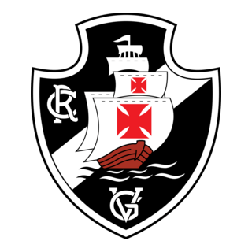

Trem-Bala da Colina: Mídia para Texto
O apelido “Trem-Bala da Colina” nasceu nos anos 2000, quando o Vasco exibia um futebol veloz, agressivo e envolvente. A força do time cruzmaltino lembrava a potência de um trem-bala, e a referência à “Colina” vem do estádio de São Januário, conhecido como a Colina Histórica. Assim, torcida e imprensa passaram a usar o termo para destacar a intensidade vascaína em campo. Hoje, é símbolo de raça, paixão e da tradição de um dos clubes mais emblemáticos do Brasil. O Trem-Bala segue vivo no coração da torcida vascaína.
